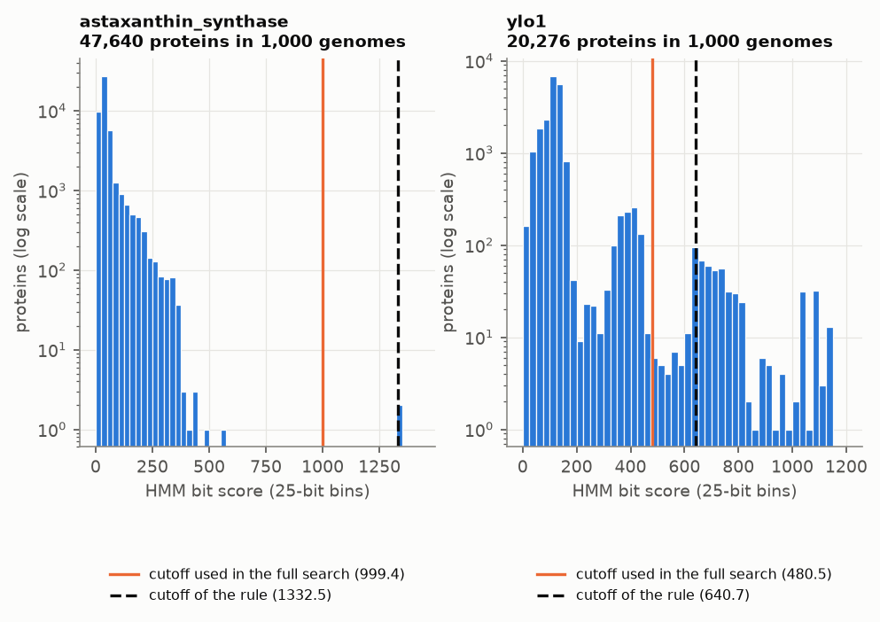
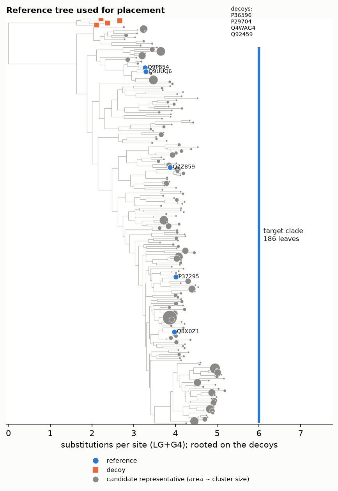

Carotenoid biosynthesis genes in 23,376 BFD fungal genomes
Search results for the 14-step pathway so far: HMMs, cutoffs and the genome-wide search (tree placement pending)
- This is a working analysis of search hits, not a gene census. Steps 1 to 4 of the census plan are done (HMMs, score check, genome-wide search). Step 5 (tree placement, which decides what a hit is) was run for one step only,
phytoene_synthase, as a pilot, and it did not separate the candidates into subgroups (section 6). No hit in this report is a called pathway gene. - Every output is stamped
PROVISIONAL. The pathway definition hasverified: false(refs/carotenoid/UNVERIFIED.md). - Nothing was tested at the bench. No BFD gene is shown to make a carotenoid.
- A “candidate row” is one protein scored against one step HMM. One protein can give rows for more than one step. The number of distinct proteins was not counted.
- Seven of the 14 step HMMs rest on one reference sequence. Their cutoffs are floors set by decoys, not by held-out references.
1. Findings so far
- The search covered every listed genome. 23,376 of 23,376 genomes were searched (244,451,335 proteins), with 0 genomes lost and 0 id-prefix errors. 987 of the 24,363 genomes in the table have no protein file and are excluded, not counted as absences (
results/chunk_excluded.tsv). - No decoy and no reference of another step scores at or above a step’s own-reference minimum on any of the 14 step HMMs (0 rows in
targets_at_or_above_min.PROVISIONAL.tsv). The test set is small: 69 decoys in total. - The search returned 238,898 candidate rows at the cutoffs used. The counts range from 12 rows (
astaxanthin_synthase) to 46,698 rows (crtr). The large counts come from single-reference steps with low floors, so most of those rows are expected to be family members. This is a reading of the counts, not a measurement. - A higher cutoff for two steps hides a large number of low-scoring proteins. With a floor of 20 bits,
astaxanthin_synthasereturns 47,640 proteins andylo120,276 proteins in 1,000 genomes. At the rule cutoff, the same run holds 2 and 458 proteins. - Step 5 pilot,
phytoene_synthase: the tree places 10,708 of 10,863 candidates (98.6%) in the target clade and 155 on a branch next to the decoys, but the target clade is too broad to tell candidates apart. The 5 references lie inside a 186-leaf clade that holds 181 of the 191 representatives (section 6). The result is “consistent with the HMM”, not “confirmed phytoene synthase”. - The candidates of
phytoene_synthaseare not squalene synthase. All 191 representatives score higher against the 5 synthase references than against a panel of 15 reviewed fungal squalene synthases (smallest margin 37.8 bits, median 128.1 bits). - The other 13 steps have no placement yet. The copy-number and phylum summaries (steps 6 to 8) wait for them.
2. The pathway, its references and the hits per step
The definition has 14 steps in 7 routes (pathways/carotenoid.yaml, routes:). It lists 30 references, of which 28 are verified and 2 are not (refs/carotenoid/UNVERIFIED.md). Under the strict reading of the evidence rule, which the owner chose on 2026-11-22, every complete route ends at evidence tier T3 (docs/superpowers/plans/2026-11-21-stage1-review-packet.md, item DC1).
| Step | References | Decoys | Cutoff of the rule | Cutoff used | Candidate rows | Genomes with a row |
|---|---|---|---|---|---|---|
acaa |
1 | 6 | 12.3 | 12.3 | 26,611 | 13,736 |
astaxanthin_synthase |
2 | 5 | 1332.5 | 999.4 (lowered) | 12 | 12 |
cars |
1 | 6 | 8 | 8 | 28,663 | 14,020 |
cart |
2 | 6 | 615.8 | 615.8 | 5,533 | 4,818 |
carx |
1 | 6 | 35.3 | 35.3 | 11,528 | 10,156 |
crtr |
1 | 3 | 68.1 | 68.1 | 46,698 | 23,021 |
ggpp_synthase |
2 | 4 | 369.3 | 369.3 | 22,924 | 15,919 |
lycopene_cyclase |
5 | 9 | 174.1 | 174.1 | 9,530 | 9,311 |
phytoene_desaturase |
4 | 5 | 706.6 | 706.6 | 9,784 | 9,495 |
phytoene_synthase |
5 | 4 | 98.8 | 98.8 | 10,863 | 10,047 |
tdh |
1 | 3 | 333.6 | 333.6 | 16,244 | 14,954 |
tsp2 |
1 | 1 | 109.7 | 109.7 | 15,976 | 8,273 |
tsp3 |
1 | 6 | 21.9 | 21.9 | 20,942 | 12,785 |
ylo1 |
2 | 5 | 640.7 | 480.5 (lowered) | 13,590 | 12,848 |
Source: results/step2/carotenoid/step_scores.PROVISIONAL.tsv, min_scores.exploratory25.PROVISIONAL.tsv and results/search/carotenoid_full/candidates.chunk*.PROVISIONAL.tsv.zst. Table made by reports/carotenoid/bin/make_step_table.py. “Genomes with a row” counts distinct genomes with at least one row for that step, out of 23,376 searched.
Two cutoffs differ from the rule. For astaxanthin_synthase (rule 1332.5, used 999.4) and ylo1 (rule 640.7, used 480.5) the owner lowered the cutoff by 25%. The two references of each step are nearly identical, so the held-out score only shows that the second reference is a close copy. The rule value is kept in the column rule_min_score of the cutoff file, and a hit of the rule is recovered by filtering on score. The table shows the rule value and the value used, so the two columns are not a contradiction.
3. Step 2: do references separate from decoys on the step HMMs?

For the seven steps with a held-out value, the lowest held-out reference scores at least 1.8 times the highest decoy. The ratio is smallest for ylo1 (640.7 against 358.7, 1.8) and phytoene_synthase (98.8 against 49.3, 2.0), and 5.9 or more for the other five. The seven steps with one reference have no held-out value (no orange diamond), so the figure shows only the decoy floor and the optimistic self-score; tdh is closest (776.0 against 333.6, 2.3). This figure shows that the 69 decoys we chose do not look like references; it does not show that BFD has no other proteins that do. The own-reference score (blue) is inflated, because the references train the HMM. PDF
How the cutoff was set (owner rule of 2026-11-22): a step with two or more references uses its lowest held-out score. A step with one reference uses its highest decoy score as a floor. The scripts are bin/score_refs_decoys.py and bin/make_min_scores.py, and the method is in README.md, section “Batched BFD search”.
4. Step 4: the genome-wide search

A candidate row is a protein at or above the cutoff of its step. Row counts say how many proteins to place in step 5, not how many genes the pathway has. Four of the five largest counts belong to steps whose cutoff is a decoy floor (crtr 68.1, cars 8.0, acaa 12.3, tsp3 21.9). The fifth is ggpp_synthase, whose cutoff is its lowest held-out score (369.3). Genome counts are distinct genomes with at least one row, out of 23,376. PDF
Run facts (MEASURED): 6 jobs on the short queue (16 CPUs, 32 GB requested), 23 min 46 s to 28 min 0 s each, peak memory 22.5 to 22.7 GB. The 200-genome timing job predicted 26 minutes. Details are in docs/superpowers/notes/2026-11-22-step4-results-and-decisions.md.
5. What a high cutoff misses

The first 1,000 genomes of the full run were searched again with a floor of 20 bits for the two steps whose cutoff was lowered. The bars are the proteins found; the lines are the two cutoffs. The rule value and the lowered value cut a long tail of low scores that holds tens of thousands of proteins, so the figure supports “a lower floor floods placement”, not “the proteins below the cutoff are real”. For ylo1 the distribution has a second group at 300 to 480 bits (970 proteins) that lies below both cutoffs; what it is was not checked. PDF
astaxanthin_synthase: the full run, with the lowered cutoff, found 12 hits in 12 genomes. 8 meet the rule value (1332.5). 4 more score 1216 to 1300.ylo1: the full run found 13,590 hits. 11,194 meet the rule value. 2,396 more score 480.5 to 640.6, in 2,219 genomes. In the 1,000-genome side run the band 480 to 640.7 holds 98 proteins and the band 640.7 or higher holds 458.- Decision (owner, 2026-11-22): keep the lowered cutoffs for step 5 and go no lower. The reason is in the same notes file.
6. Step 5 pilot: tree placement for phytoene_synthase
Method (PROPOSED settings marked): the 10,863 candidate proteins were cut to their aligned domain (padded by 20 residues, PROPOSED) and clustered with mmseqs2 at 0.5 identity and 0.8 coverage. The 191 clusters gave 191 representatives, so the cap of 300 never applied. The reference set holds the 5 references, 4 squalene synthase decoys and the 191 representatives (200 sequences; mafft, clipkit, 916 of 1,186 columns kept). The tree is raxml-ng 2.0.4 under LG+G4, rooted on the 4 decoys (PROPOSED; this step has no outgroup file). All 10,863 candidate domains were aligned to it with hmmalign and placed with epa-ng 0.3.8. A candidate counts as target when at least 0.5 of its likelihood weight (PROPOSED) lies in the smallest clade that holds all 5 references.

Grey circles are candidate representatives, sized by the number of candidate domains in their cluster. Blue circles are the 5 references and the four orange squares at the top are the decoys. The figure shows that the target clade (blue bar) is not a narrow group around the references: the 5 references sit apart from each other inside one clade of 186 leaves, so “placed in the target clade” cannot separate one kind of candidate from another. Phyla of the representatives are not drawn. PDF
Result (MEASURED, results/step5/carotenoid/phytoene_synthase/SUMMARY.tsv) |
Value |
|---|---|
| Candidate domains extracted and placed | 10,863 of 10,863 (0 extraction failures) |
Called target / decoy |
10,708 / 155 |
Support of the target calls (likelihood weight in the clade) |
median 1.0, minimum 0.745; 10,705 of 10,708 at 0.9 or more |
| Long pendant branch (above 1.0) | 0 of 10,863 (median 0.167, maximum 0.832) |
assign_steps labels |
10,708 assigned, 155 unassigned, 0 fusion candidates |
| Assigned proteins | 10,708 in 9,896 genomes; copies per genome 1 (9,328), 2 (354), 3 (191), 4 (19), 5 (1), 6 (3) |
| Representatives in target / decoy side | 181 of 191 / 10 of 191 |
- Reading trap: “assigned” here means placed in the target clade. The 5 references are not close relatives, so the smallest clade that holds all of them spans 181 of the 191 representatives. A support of 1.0 therefore says the candidate is not on the decoy side. It does not say it is a phytoene synthase rather than a relative. Because every best-clade support is 0.745 or more, the 0.5 threshold removes nothing.
- Where the 10,708 fall inside the clade (reported by the pilot run, not saved as a script, so not repeated by me): about 9,082 candidates in the subclade of P37295 and Q8X0Z1 (78 leaves, 76 of them Ascomycota representatives), about 281 in the subclade of Q9P854 and Q9UUQ6, 1,333 elsewhere in the target, 155 outside it, 12 unassigned.
- The 155 candidates on the decoy side sit on a branch of 10 representatives next to the decoys. What they are was not checked.
- A support of 1.0 does not mean the placement is certain. Only 5 references and 4 decoys give the tree its anchors. The other 191 leaves are representatives, which are candidates themselves.
- Reviewed fungal bifunctional lycopene cyclase / phytoene synthase entries beyond the 5 references exist. A UniProt query (EC 2.5.1.32, Fungi, reviewed, run 2026-11-22) returns 19 entries, 14 of them not among our 5 references. Against this panel 140 of the 191 representatives score higher than against the 5 references (median best score 183 against 160 bits). The panel holds full-length proteins and the references are cut domains, so this comparison favours the panel. The evidence behind those 14 entries was not checked. They are the obvious named members to add to the tree (
bin/check_paralog_panel.sh, outputparalog_panel_lcps/).
7. Negative and unresolved results
- Single-reference steps cannot be checked for sensitivity. Seven steps (
acaa,cars,carx,crtr,tdh,tsp2,tsp3) have one reference. Removing it leaves nothing to score, so there is no held-out value. More references would help; a structure model would not. - The held-out check is weak for near-identical references. For
astaxanthin_synthasethe lowest held-out score is 1332.5 and the lowest own score is 1343.2, because the two references are almost the same sequence. The cutoff therefore says little about distant homologs. The 25% reduction is a test of this, not a fix. - The lycopene cyclase decoys test the cutoff weakly. The highest decoy score is 29.3 and the lowest held-out reference score is 174.1. Any cutoff in between is consistent with the decoys, and none was tested on a genome (
refs/carotenoid/decoys/LYCOPENE_CYCLASE_DECOYS.md). - A same-function homolog from Archaea (Q9HNE5) scores 115.6 on the cyclase HMM. It is a tree outgroup only, not a decoy, so it does not set the cutoff (
refs/carotenoid/outgroups/). - The first step 5 design does not discriminate for
phytoene_synthase. The clade of the 5 references is too broad and every support is high, so placement removes only the 155 candidates on the decoy side. The expectation that the candidates would include many squalene synthases was wrong: all 191 representatives score higher against the references than against 15 reviewed fungal squalene synthases (bin/check_paralog_panel.sh,paralog_panel/summary.tsv: smallest margin 37.8 bits). The 4 decoys therefore probe the root of the tree, not the candidate set. - The metabolomics corpus cannot test carotenoids. REPORTED by the EBC side: 0 of 84 fungal-reference accessions show beta-carotene, zeaxanthin or canthaxanthin (
docs/superpowers/notes/2026-11-21-exploration-log.md, section 1). This is a statement about the corpus, not about BFD genomes.
8. What would change this, and what was not done
What would change the findings. Adding named members that are neither squalene synthase nor the 5 references (for example the 14 reviewed fungal entries above, and bacterial or plant phytoene synthases as outgroups) would show whether the target clade splits into groups the tree can name. A decoy or a non-pathway family member that places inside a target clade would show that a step’s HMM cannot separate it. A reference set with more members for a single-reference step would change its floor.
Not done here:
- Step 5 for the other 13 steps. The tool is step-generic (
bin/step5_place.py);lycopene_cyclaseis ready to run with its outgroup file and has not been run. - Quality, contamination and haplotype flags (step 7). There is no fungal versus non-fungal reference set, so counts will be raw first.
- The copy matrix and phylum summary (step 8), the deposited versus BFD comparison (steps 9, 10), the tblastn absence check (step 11) and triage (step 12).
- A species tree overlay. A genus-level tree exists (
BFD_dashboard/atlas_data/phylo/results/protein/tree/fungi_odb10/final_tree.nw, 1,643 tips by a text scan of the file). Its root, outgroup and tip overlap with the FastTree trees were not checked. - The question of whether fungal lycopene cyclases have diversified in some groups (
docs/superpowers/notes/2026-11-22-open-questions.md, Q1). It needs step 5 first.
9. Methods, tools and files
| What | Where |
|---|---|
Step HMMs (14, from refs/carotenoid/*.faa) |
results/hmms/carotenoid/*.PROVISIONAL.hmm, bin/build_step_hmms.py |
| Reference and decoy scoring, held-out check | bin/score_refs_decoys.py, slurm/score_refs_decoys.sbatch, job 32375043 |
| Cutoffs | bin/make_min_scores.py; used: results/step2/carotenoid/min_scores.exploratory25.PROVISIONAL.tsv |
| Chunks and search | bin/make_chunks.py, bin/search_chunk.py, slurm/search_chunk.sbatch; jobs 32375296 to 32375301; side run 32375378 |
| Step 5 pilot | bin/step5_place.py, slurm/step5_prepare.sbatch, slurm/step5_place.sbatch, tests/test_step5_place.py; jobs 32376309 and 32376554; output results/step5/carotenoid/phytoene_synthase/ (RUN.md lists commands and tool versions) |
| Paralog panel check | reports/carotenoid/bin/check_paralog_panel.sh (UniProt REST and blastp) |
| Figures | reports/carotenoid/figures/bin/fig_census_search.py (figures 1 to 3) and fig_ref_tree.py (figure 4), tested in tests/test_fig_census_search.py and tests/test_fig_ref_tree.py |
| Tool versions | hmmer 3.4, mafft 7.505, raxml-ng 2.0.4, epa-ng 0.3.8, mmseqs2 17-b804f, clipkit 1.3.0, Python 3.12, zstd 1.5.6 |
| Code commits | 32f2f90 (tools), 834288e (notes) on branch pathway-census-realdata |
| Decisions and evidence | docs/superpowers/notes/2026-11-22-owner-decisions.md, 2026-11-22-step4-results-and-decisions.md |
All results/ files are git-ignored. The figures are regenerated from them by the script in the table.
Regenerate the figures and the table (run from analysis/pathway_census):
R=results
/usr/bin/python3.12 reports/carotenoid/figures/bin/fig_census_search.py \
--step2-dir $R/step2/carotenoid --search-dir $R/search/carotenoid_full \
--min-scores $R/step2/carotenoid/min_scores.exploratory25.PROVISIONAL.tsv \
--side-dir $R/search/side_eval_low_cutoff --out-dir reports/carotenoid/figures/out
/usr/bin/python3.12 reports/carotenoid/bin/make_step_table.py \
--step2-dir $R/step2/carotenoid --search-dir $R/search/carotenoid_full \
--min-scores $R/step2/carotenoid/min_scores.exploratory25.PROVISIONAL.tsv \
--refs-dir refs/carotenoid --report reports/carotenoid/REPORT.md
/usr/bin/python3.12 reports/carotenoid/figures/bin/fig_ref_tree.py \
--step5-dir $R/step5/carotenoid/phytoene_synthase --out-dir reports/carotenoid/figures/out